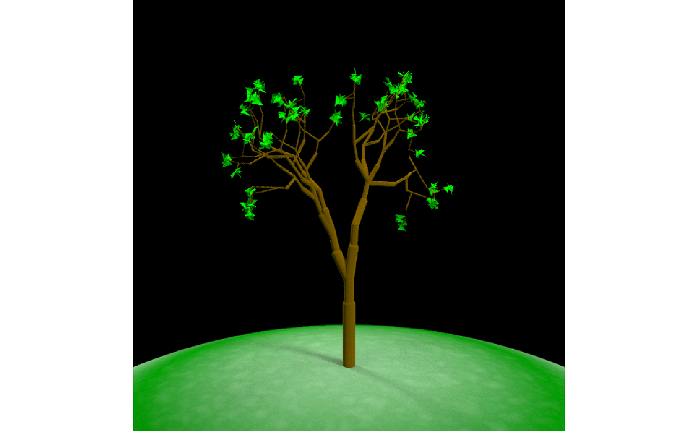
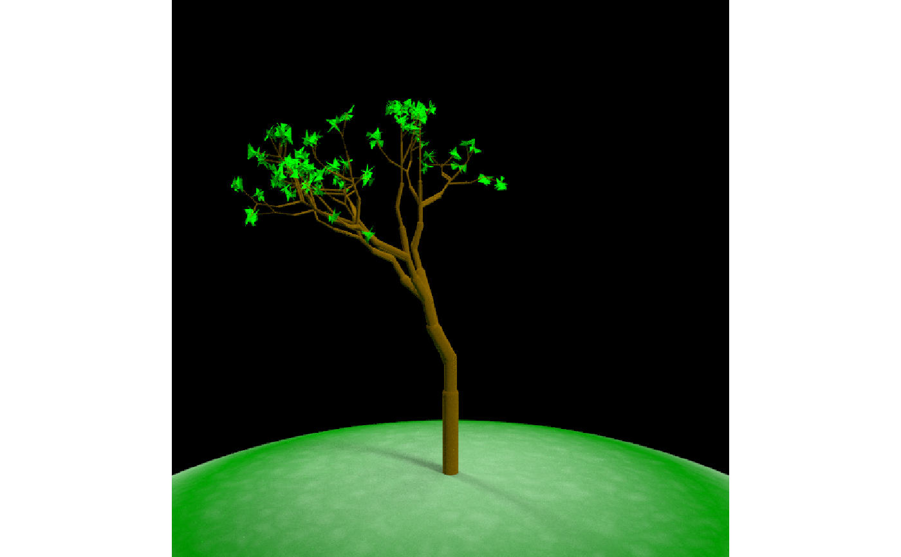
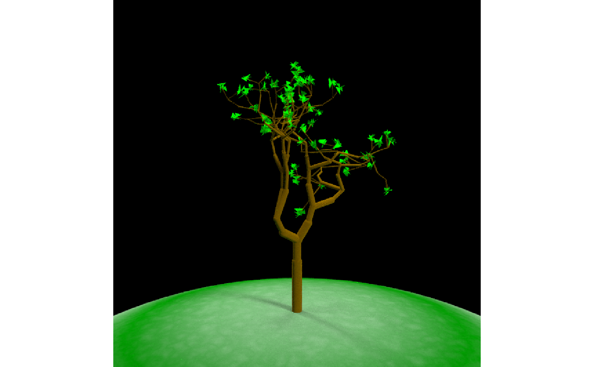
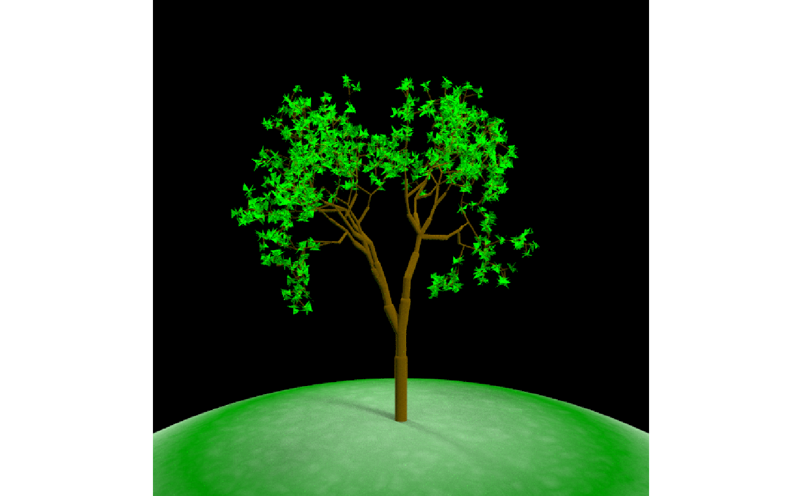
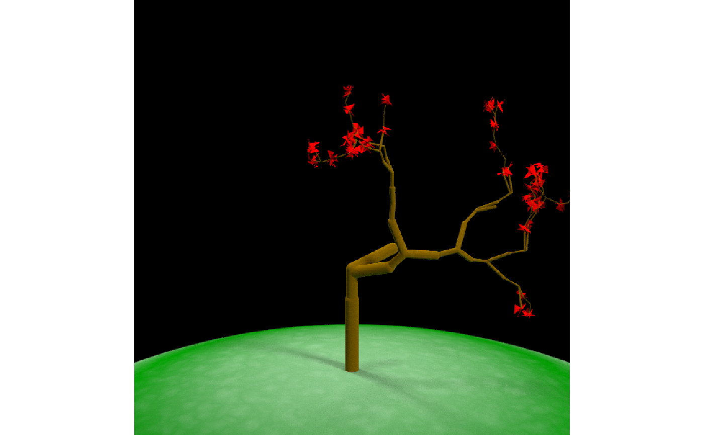

generate_tree.RdGenerates a procedural tree with
generate_tree( x = 0, y = NULL, z = NULL, seed = 2000, midpoint = TRUE, branch_depth = 6, branch_scale = c(0.8, 0.9), branch_angle = c(-30, 30), branch_angle_vert = seq(-45, 45, by = 5), branch_split = 2, branch_prune_prob = 0, branch_color = "#603000", branch_radius_shrink = 15, leaf_color = "green", leaf_depth_start = NULL, leaf_size = 0.2, leaf_prob = 1, scale = 1 )
| x | Default `0`. Either the x-coordinate, or if a length-3 vector the x,y, and z coordinates of the base of the tree. |
|---|---|
| y | Default `NULL`. The y-coordinate of the base of the tree. Ignored if the `x` is a length-3 vector. |
| z | Default `NULL`. The z-coordinate of the base of the tree. Ignored if the `x` is a length-3 vector. |
| seed | Default `2`. Random seed for generating the tree. |
| midpoint | Default `TRUE`. Method of extending branches. If `FALSE`, it grows directly to the next node. Else, it first extends a midpoint given the previous orientation and grows from there to the end point. |
| branch_depth | Default `6`. Number of branch splits to end tree. |
| branch_scale | Default `c(0.8,0.9)`. |
| branch_angle | Default `c(-30, 30)`. Horizontal branching angle from previous branch. |
| branch_angle_vert | Default `seq(-45,45, by=5)`. Vertical branching angle from previous branch. |
| branch_split | Default `2`. |
| branch_prune_prob | Default `0`. |
| branch_color | Default `#603000`. |
| branch_radius_shrink | Default `15`. Constant that determines the rate the radius shrinks. Higher values result in less shrinking. |
| leaf_color | Default `NULL`. |
| leaf_depth_start | Default `NULL`, automatically set |
| leaf_size | Default `0.01`. |
| leaf_prob | Default `1`. |
| scale | Default `1`. Uniformly scale the tree. |
#Change the branch angle choices generate_tree(seed=1,branch_angle_vert = c(-15,15)) %>% render_tree()#Change the horizontal branch angle choices generate_tree(seed=6,branch_angle = seq(-90,90,by=10)) %>% render_tree()#Have the leaves start appearing at branch 6 to fill in the tree generate_tree(seed=1,branch_depth = 8, leaf_depth_start = 6) %>% render_tree()#Change the color and seed to get a different structure generate_tree(seed=2,branch_depth = 6, leaf_depth_start = 4, leaf_color="pink") %>% render_tree()#Shorten the branches at each junction by random values generate_tree(seed=2,branch_depth = 6, leaf_depth_start = 4, leaf_color="pink", branch_scale = c(0.5,0.6)) %>% render_tree()#Lengthen the branches at each junction by random values (this results in a wild tree) generate_tree(seed=2,branch_depth = 6, leaf_depth_start = 4, leaf_color="red", branch_scale = c(1.1,1.2)) %>% render_tree()#All angles one sign make the tree lean over, and here we double the size of the leaf generate_tree(seed=2,branch_depth = 6, leaf_color="purple", leaf_size=0.4, branch_angle_vert = c(15,5)) %>% render_tree()#Include a random chance to not grow branches generate_tree(seed=4,branch_depth = 8, leaf_depth_start = 6, leaf_color="red", branch_prune_prob = 0.5) %>% render_tree()# }